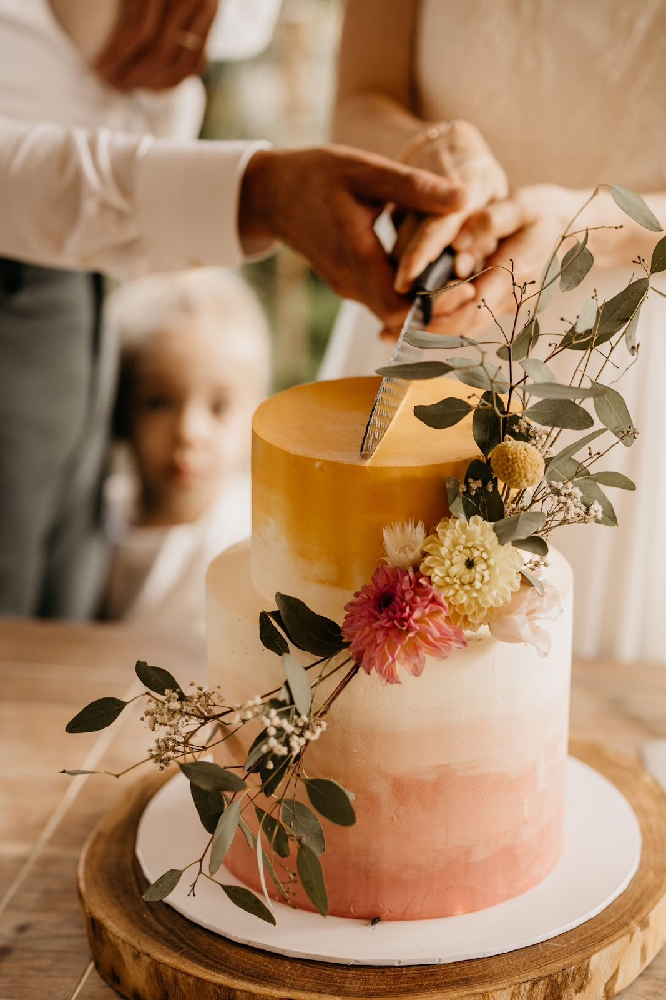
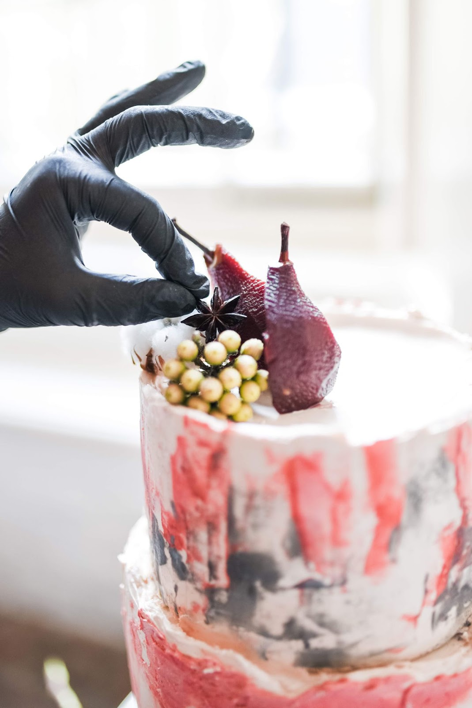
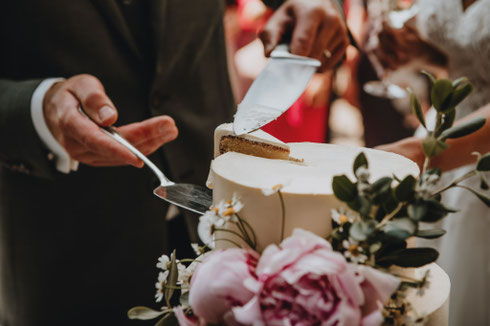
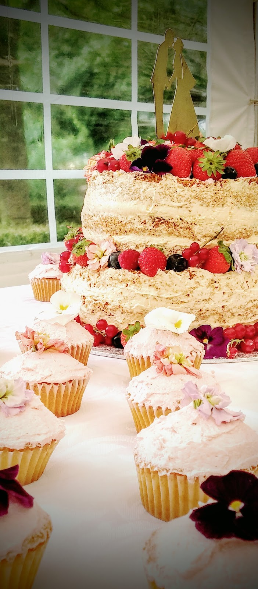
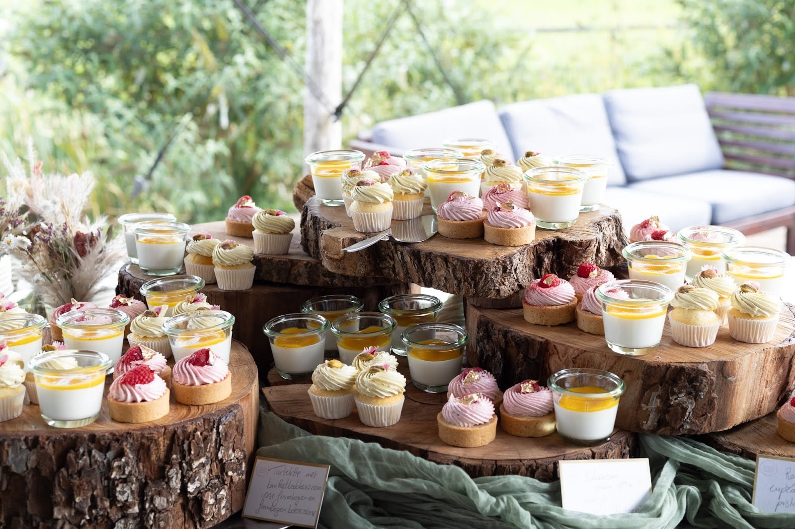
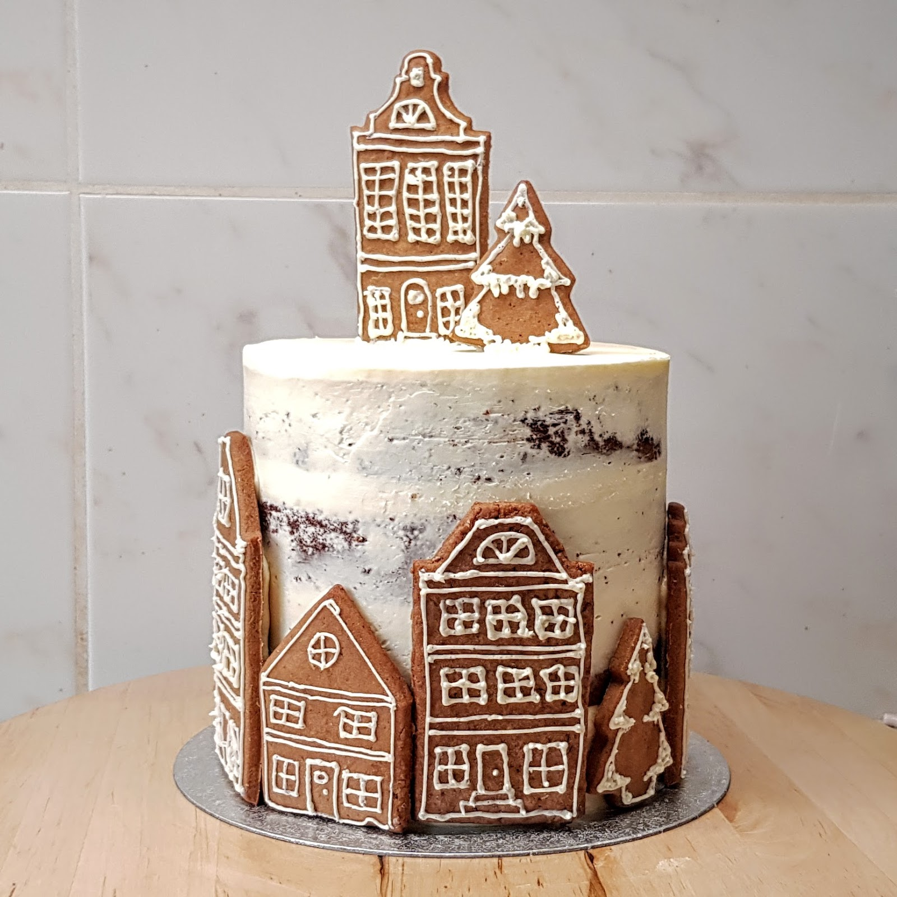
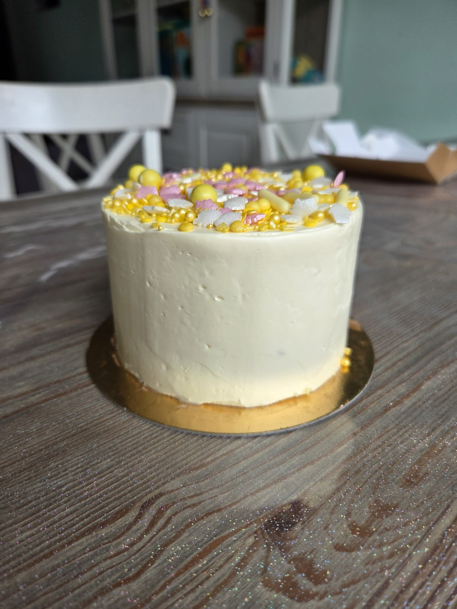
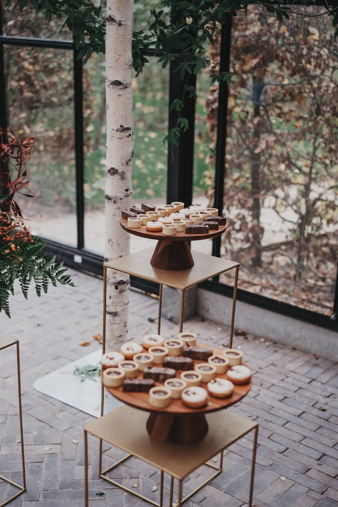
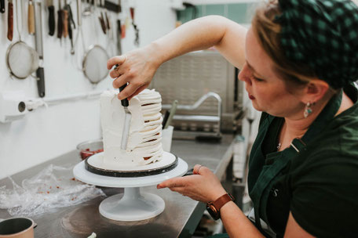
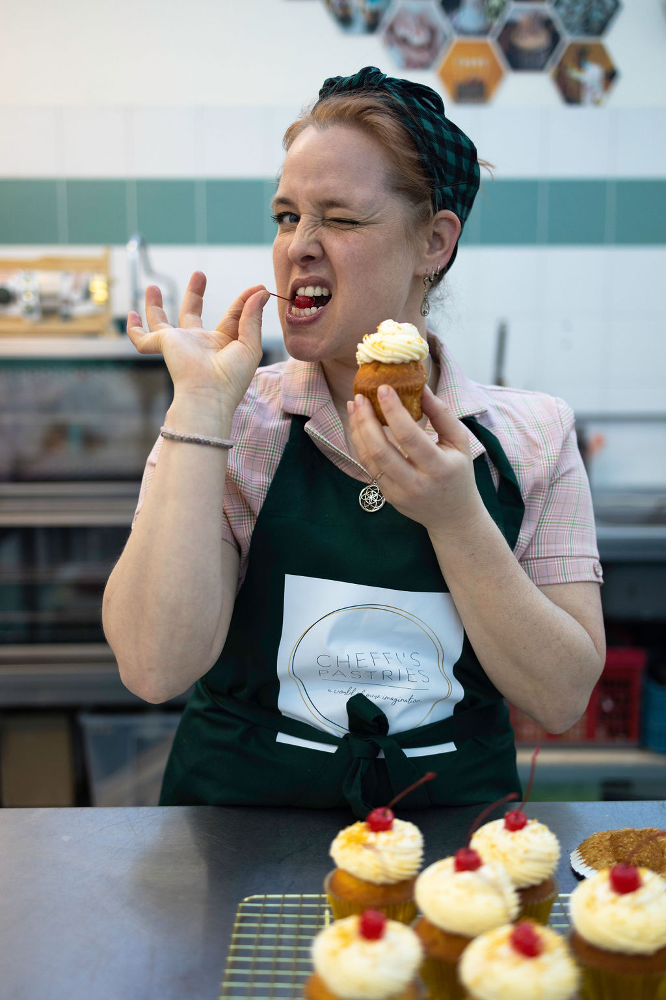

Magical Moment
- ✦Meerdere kleuren in aquareleffect, textuur of stencil
- ✦Gouden details of bladgoud
- ✦Bloemen, gekozen samen met jullie (bloemen)stylist
- ✦Eventueel een persoonlijke taarttopper
- ✦Vanaf 50 personen, minimaal 2 lagen
Bruidstaarten en sweet tables uit Nijmegen
Inès Cheffi ontwerpt en bakt elke taart op maat, met pure ingrediënten van lokale ondernemers. Voor jullie trouwdag, een feest of gewoon een bijzonder moment.
4,8 op Google, uit 38 reviews


Alles wat ik maak, maak ik op maat. Ik werk met goede basisingrediënten zonder toevoegingen, het liefst van lokale biologische ondernemers. Inspiratie haal ik overal vandaan: uit een kruid, de kleur van een bloem of een gebouw.
Een lastig ontwerp of een bijzondere smaak? Kom maar op. Ik laat me graag uitdagen en pas recepten aan jullie wensen aan.
Zien, ruiken, proeven. Een taart mag al je zintuigen prikkelen, zodat een geur je later weer terugbrengt naar die ene dag.
Bruiloft
Sinds 2016 maak ik bruidstaarten en sweet tables voor bruiloften door heel Nederland, en zelfs over de grens. In 2019 won ik de ZIWA award voor beste bruidstaartbedrijf van Nederland, in 2022 was ik finalist bij de Toptrouwbedrijven Awards.
Ik neem bewust maar een beperkt aantal opdrachten aan. Populaire datums zijn snel vol, dus begin met zoeken zodra jullie de datum weten.


Mijn hoofd zit vol ontwerpen die nog nooit gebakken zijn. Kies er een uit, voor een zachtere prijs.
Zo gaan we samen te werk. Vragen tussendoor kun je altijd stellen.
Plan een proeverijKleuren, styling, inspiratiebeelden, de fotograaf en bloemist, en jullie budget. Alles helpt bij het ontwerp.
In mijn atelier bij NYMA in Nijmegen. Wonen jullie verder weg? Dan stuur ik een proeverijbox en bespreken we het online. Kosten: € 35, exclusief eventuele verzending.
Na de proeverij krijgen jullie een offerte per mail. Met een aanbetaling van € 250 staat de datum vast (niet terug te betalen).
Ongeveer een maand voor de bruiloft lopen we alles nog eens door. Daarna volgt de betaallink voor het restant.

Sweet tables
Tartelettes, cupcakes, brownies en glaasjes vol, opgebouwd in de stijl van jullie dag. Ik zorg dat alles op de locatie mooi staat.
"De sweet table was super verzorgd. Vanaf het moment van de proeverij tot de grote dag zelf hebben wij geen zorgen gehad over hoe het op de locatie kwam of de opmaak van de tafel. Iedereen was vol lof over de opmaak en de smaak."
Taarten en cupcakes
Een verjaardagstaart, cupcakes voor Pasen of gewoon gebak omdat het kan. Het hoeft niet groots te zijn om bijzonder te smaken. Welke gelegenheid ook, ik maak er iets moois van.
"Heerlijkheden van pure ingrediënten, ontzettend lekker, de beste brownies die ik ooit heb gehad! Daarnaast ook een verrukkelijk mini taartje met vanille botercreme. Aanrader!"



Workshops
Wat is er leuker dan samen iets heerlijks maken? Kom met z'n tweeën naar het atelier en leer tartelettes maken, of hoe je een taart vult en afsmeert. Een mooi cadeau, voor een ander of voor jezelf.
"Ik heb samen met een vriendin de tartelette-workshop gevolgd bij Cheffi’s Pastries. Inès is een hele leuke docent en deelt waardevolle tips. Zeker een aanrader! ✨"
"Super leuk, leerzaam en erg gezellig. Top uitleg en je raakt helemaal geïnspireerd om tartelettes zelf te gaan maken. Nooit geweten dat caramel en lemon curd best easy is om te maken als je weet waar je op moet letten."


Over Inès
Hallo! Ik ben Inès Cheffi. Als kind bakte ik al met mijn moeder, al deed ik waarschijnlijk vooral het likwerk. En met een achternaam als Cheffi kon ik natuurlijk nergens anders belanden dan in de keuken.
Nu bak ik in mijn atelier in Nijmegen, en thuis versier ik cakepops en cupcakes met mijn zoontjes. Je eet niet elke dag taart, meestal is het een bijzondere dag. Dat moment waarop je geniet van wat je ziet, ruikt en proeft: daarom bak ik.
Recent werk zie je op Instagram: @cheffis_pastries
"Soms ontmoet je een leverancier die niet alleen begrijpt wat je bedoelt, maar het concept naar een nog hoger niveau tilt."
Vertel wat je in gedachten hebt, dan denk ik vrijblijvend met je mee en stuur ik een offerte.